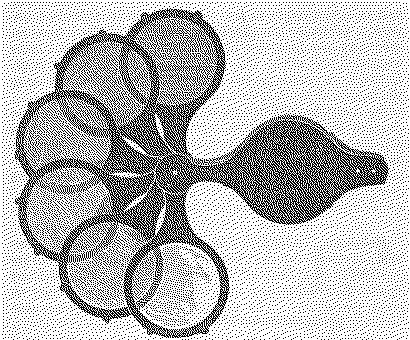

Organisator:innen:
Prof. Dr. Birgit Schneider & Dr. Maximilian Hepach von Weather Reports (Universität Potsdam).
Keynote:
John Durham Peters (Yale University)

Elementare Medien, so der Ausgangspunkt dieses Workshops, vermitteln bestimmte Zugänge zur Welt und sind darin ähnlich unhintergehbar wie, nach Kant, die reinen Anschauungsformen Raum und Zeit. Reflektiert man auf die Gegebenheitsweisen unserer Erfahrung und blickt dabei nicht auf was in der Erfahrung vorliegt, sondern wie wir etwas erfahren, kommt man unweigerlich zu dem Schluss: kein Medium ist nie. Jede Erfahrung ist elementar vermittelt.
Diese Überlegung schließt an verschiedene Autor:innen an, die dazu auffordern, Umwelten als Medien zu denken. In John Durham Peters Arbeit The Marvelous Clouds (2015) und Nicole Starosielskis Artikel »The Elements of Media Studies« (2019) wird diese Forderung am programmatischsten ausbuchstabiert. Auf diese antwortend plädiert Melody Jue in Wild Blue Media (2020) für eine Milieu-spezifische Analyse: Man müsse nicht nur darauf achten, wie bestimmte elementare Medien (Luft, Wasser) Erfahrung vermitteln, sondern auch, wie sich diese Vermittlung in Sprache einschreibt. Taucht man, Jue folgend, medienwissenschaftliche Begriffe wie ›interface‹, ›inscription‹ oder ›database‹ unter Wasser, treten unsere »terrestrischen Vorurteile« an die Oberfläche.
Damit ist bereits eine zentrale Schwierigkeit der Beschäftigung mit elementaren Medien angezeigt: Man schaut in der Regel durch sie hindurch. Elementare Medien bleiben meist unscheinbar.
Vom 27. bis 28. Juni 2024 laden wir zur gemeinsamen Auseinandersetzung mit dieser Schwierigkeit ein. Auf Grundlage der Vorstellung des je eigenen Forschungsprojekts bzw. -ansatzes wollen wir einen Gesprächsraum für deutschsprachige Forschung zu elementaren Medien eröffnen. Am 27. bietet eine virtuelle Keynote von John Durham Peters die Gelegenheit zur weiteren Diskussion.
Literatur
Um an dem Workshop teilzunehmen, bitten wir um die Einreichung eines Abstracts (200-300 Wörter) bis zum 17. März 2024. Reise- sowie Übernachtungskosten werden übernommen. Email an Maximilian Hepach.
28. bis 29. Juni 2024
ZeM (Brandenburgisches Zentrum für Medienwissenschaften)
Hermann-Elflein-Str. 18
14467 Potsdam
Organisator:innen:
Prof. Dr. Birgit Schneider & Dr. Maximilian Hepach von Weather Reports.
Keynote:
John Durham Peters